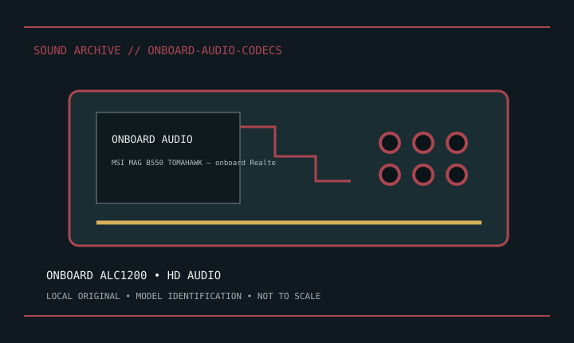

[ INDIVIDUAL MODEL // SOUND HARDWARE ]
MSI MAG B550 TOMAHAWK — onboard Realtek ALC1200
Motherboard-specific ALC1200 implementation; rear analog audio and front HD Audio header.

Model-specific specifications
| Exact model / scope | MSI MAG B550 TOMAHAWK — onboard Realtek ALC1200. Record board revision and exact MSI driver. No +48 V mic preamp; follow the board manual for jack mapping. |
|---|---|
| Bus / host | Soldered motherboard audio implementation, not an expansion card. |
| Documented functions / connectors | Motherboard-specific ALC1200 implementation; rear analog audio and front HD Audio header. |
| Conversion / formats | Board-specific codec and analog performance; see motherboard support/manual. |
| Drivers / OS | Use the linked model-specific manufacturer support/manual page. Driver and supported OS availability depends on release; no undocumented OS compatibility is asserted. |
| Power / microphone | Motherboard mic jacks are not 48 V XLR preamps. |
Compatibility & preservation
Record board revision and exact MSI driver. No +48 V mic preamp; follow the board manual for jack mapping.
- Photograph model/revision, connectors and included accessories before service.
- Retain the matching manual, driver/firmware and known-working host/routing configuration.
- Follow documented signal levels, connector pinout and power requirements; physical fit alone is not compatibility.
Manufacturer sources
- Manufacturer product information — MSI MAG B550 TOMAHAWK — onboard Realtek ALC1200Product/model source; match the exact revision and board.
- Manufacturer support and documentationOfficial model documentation, drivers and OS compatibility information.